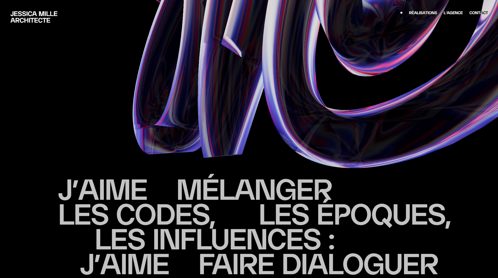
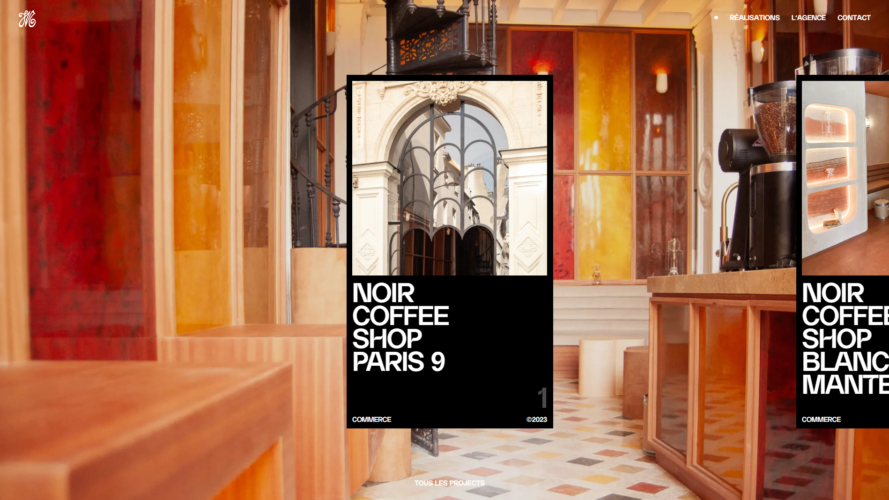

Dala Technologies Limited
Creating a website like Dala involved a comprehensive process that balanced creative vision with technical precision. Here's how the studio might have approached the project:

Initial Consultation and Research
- Client Briefing: The process began with detailed discussions with the Dala team to understand their brand identity, objectives, target audience, and the specific functionalities they needed for the site. Understanding the brand’s aesthetic—modern, minimalistic, and design-focused—was crucial in guiding the project.
- Market and Competitor Analysis: We conducted thorough research on industry trends and competitor websites to identify key elements that would help Dala stand out while maintaining a user-friendly experience.

Conceptualization and Design
- Wireframing and Prototyping: Based on the initial research and client input, we created wireframes to outline the website’s structure, ensuring a seamless flow of information and intuitive navigation. The focus was on creating a clean, visually engaging layout that reflects Dala’s design ethos.
- Visual Design: The design phase was centered around translating Dala’s brand identity into a digital format. This involved choosing a restrained color palette, elegant typography, and a layout that emphasizes whitespace and clean lines. Special attention was given to the visual hierarchy to guide users naturally through the content.
- Client Feedback and Iteration: After presenting the initial designs, we worked closely with the Dala team to refine the aesthetics and functionality based on their feedback, ensuring the final design aligned perfectly with their vision.

Development
- Frontend Development: The next step was bringing the design to life through responsive frontend development. The challenge was to ensure the site looked and performed well across all devices, maintaining its minimalistic beauty without compromising on functionality. Advanced CSS techniques were employed to create smooth animations and transitions that enhance the user experience.
- Backend Development: We implemented a custom content management system (CMS) that allows the Dala team to easily update content without needing technical expertise. The CMS was designed to be intuitive and flexible, supporting the website’s sleek design while ensuring efficient content management.
- Integration of Features: Key features like a dynamic portfolio section, interactive elements, and seamless transitions were integrated to showcase Dala’s projects effectively. Ensuring that the site loads quickly and runs smoothly, even with high-resolution images and animations, was a top priority.
- Cross-Platform Testing: Any issues identified during testing were addressed promptly, and additional optimization was performed to improve site speed and performance. This included image compression, code minification, and leveraging browser caching.

Challenges and Solutions
- Maintaining Performance with High-Quality Visuals: One of the main challenges was balancing the high-quality visuals required by Dala’s brand with the need for fast loading times. We tackled this by using modern image formats, implementing lazy loading, and optimizing the website's assets.
- Ensuring a Seamless User Experience: Given Dala’s focus on design, it was crucial that the website provided a seamless, intuitive user experience. This was achieved through careful planning of user pathways, a well-structured information architecture, and a strong focus on usability testing.